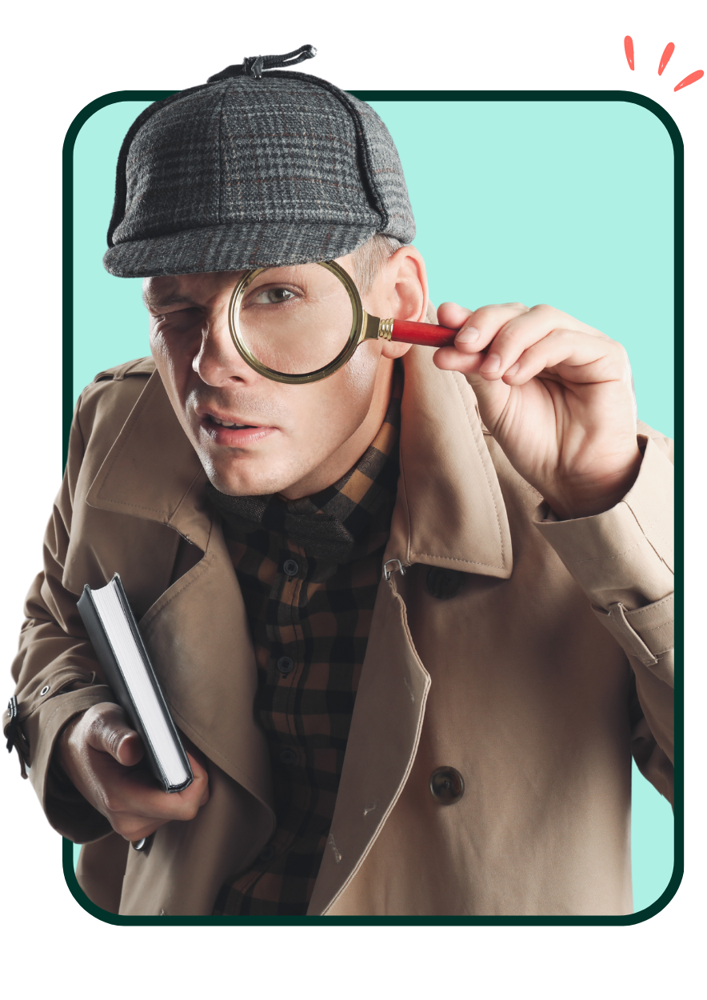

Undersöka arbetsmiljön
En central del av arbetsmiljöarbetet är att undersöka arbetsmiljön för att bedöma risker. En risk definieras som sannolikheten för att en farlig händelse eller exponering ska inträffa och de potentiella konsekvenserna, som skada eller ohälsa. Arbetsgivaren ansvarar för att systematiskt och planerat undersöka, bedöma och åtgärda risker i verksamheten.
För att effektivt undersöka arbetsmiljön bör rutiner skapas som svarar på följande frågor:
- Vad ska vi undersöka?
- När ska vi undersöka det?
- Hur ska vi undersöka det?
- Vilka ska göra det?
